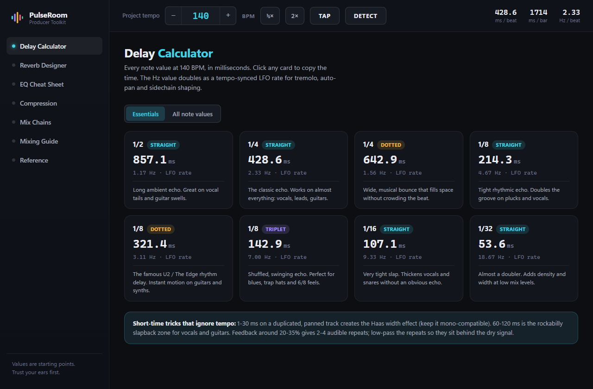
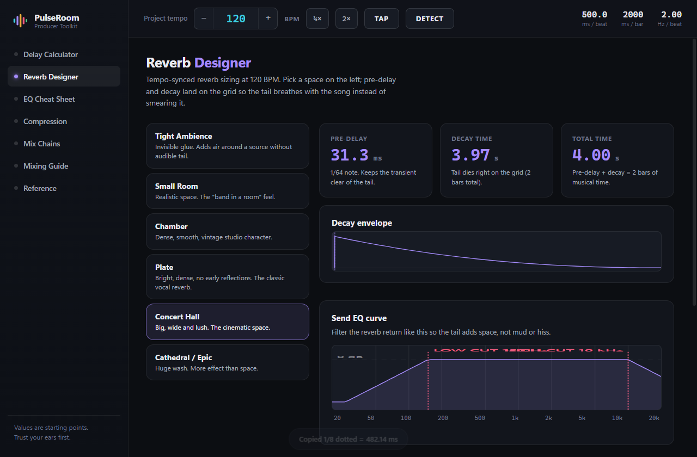

Delay time calculator
and mixing toolkit.
Turn your song's BPM into delay times, reverb tails, EQ moves and compression settings. Use the calculator below in your browser, or download the free app that also detects tempo from any song, works offline and never asks for an account.
BPM to delay time calculator
Enter your tempo to get every note value in milliseconds, including dotted and triplet delays. The Hz value doubles as a tempo-synced LFO rate for tremolo, auto-pan and sidechain shaping.
Reverb pre-delay & decay at this tempo
Formula: one quarter note = 60000 ÷ BPM milliseconds. Dotted = ×1.5, triplet = ×2/3.
Delay time chart for common tempos
Quarter, eighth, dotted eighth and sixteenth note delay times in milliseconds for the tempos producers use most.
| BPM | 1/4 | 1/8 | 1/8 dotted | 1/16 | 1/4 triplet |
|---|---|---|---|---|---|
| 70 | 857.1 | 428.6 | 642.9 | 214.3 | 571.4 |
| 80 | 750.0 | 375.0 | 562.5 | 187.5 | 500.0 |
| 90 | 666.7 | 333.3 | 500.0 | 166.7 | 444.4 |
| 100 | 600.0 | 300.0 | 450.0 | 150.0 | 400.0 |
| 110 | 545.5 | 272.7 | 409.1 | 136.4 | 363.6 |
| 120 | 500.0 | 250.0 | 375.0 | 125.0 | 333.3 |
| 128 | 468.8 | 234.4 | 351.6 | 117.2 | 312.5 |
| 140 | 428.6 | 214.3 | 321.4 | 107.1 | 285.7 |
| 150 | 400.0 | 200.0 | 300.0 | 100.0 | 266.7 |
| 160 | 375.0 | 187.5 | 281.3 | 93.8 | 250.0 |
| 174 | 344.8 | 172.4 | 258.6 | 86.2 | 229.9 |
What PulseRoom does
Tempo detection
Drop any song onto the app and it finds the BPM in seconds — analysed on your machine, nothing uploaded.
Delay calculator
Straight, dotted and triplet values for every note division, one click to copy into your plugin.
Reverb designer
Pre-delay and decay locked to the bar grid, plus the send-EQ curve drawn for you.
EQ cheat sheet
Boost and cut zones for 13 instruments painted on a real frequency spectrum.
Compression settings
Ratio, attack, release and gain reduction for 14 sources, with the envelope drawn.
Mix chains & reference
Plugin order per source, LUFS targets per platform, and note-to-Hz for tuning 808s.


EQ cheat sheet: key frequencies by instrument
Starting points for the most common sources. Sweep with a narrow boost to find problems, then cut with the smallest move that fixes it.
| Source | Cut | Boost |
|---|---|---|
| Kick drum | 200–400 Hz (boxy) | 40–60 Hz weight, 3–5 kHz beater click |
| Snare | 400–700 Hz (honk) | 150–250 Hz body, 3–6 kHz crack |
| Bass | 200–350 Hz (mud) | 40–80 Hz foundation, 700 Hz–1.2 kHz growl |
| 808 | below 25–30 Hz | 30–60 Hz sub, saturate 500 Hz–1.5 kHz |
| Lead vocal | 200–400 Hz mud, 1–2 kHz nasal | 3–6 kHz presence, 10 kHz+ air |
| Electric guitar | 200–400 Hz mud, 4–7 kHz fizz | 2–4 kHz presence |
| Acoustic guitar | 80–120 Hz boom | 2–5 kHz clarity, 8–12 kHz sparkle |
| Hi-hats & cymbals | below 200 Hz, 2–4 kHz harshness | 7–12 kHz shimmer |
Compression settings by source
Set ratio, attack and release first, then lower the threshold until the meter shows the target gain reduction.
| Source | Ratio | Attack | Release | GR |
|---|---|---|---|---|
| Kick drum | 4:1 | 10–30 ms | 50–100 ms | 3–6 dB |
| Snare | 4:1 | 5–15 ms | 40–80 ms | 3–6 dB |
| Bass | 4:1 | 10–40 ms | 40–120 ms | 4–8 dB |
| Lead vocal | 3:1–4:1 | 5–15 ms | 40–80 ms | 3–6 dB |
| Rap vocal | 4:1–6:1 | 1–5 ms | 30–60 ms | 5–10 dB |
| Drum bus | 2:1–4:1 | 10–30 ms | auto | 2–4 dB |
| Mix bus | 1.5:1–2:1 | 30 ms | auto | 1–3 dB |
LUFS targets by streaming platform
| Platform | Integrated LUFS | True peak |
|---|---|---|
| Spotify / Tidal / Amazon | −14 | −1 dBTP |
| Apple Music | −16 | −1 dBTP |
| YouTube | −14 | −1 dBTP |
| Club / DJ master | −7 to −5 | −0.3 dBTP |
| Broadcast (EBU R128) | −23 | −1 dBTP |
Download PulseRoom free
One download, no account, works offline. The app adds tempo detection from audio files, tap tempo, click-to-copy values, mix chains and the full mixing guide.
Windows: unsigned installer — if SmartScreen appears choose “More info → Run anyway”. macOS: universal build for Intel and Apple Silicon; first launch right-click → Open. Android: allow installs from unknown sources when prompted.
Frequently asked questions
How do you calculate delay time from BPM?
Divide 60,000 by the tempo to get one quarter note in milliseconds. At 120 BPM that is 500 ms. Halve it for an eighth note, multiply by 1.5 for dotted, and by 2/3 for triplet values.
What delay time should I use at 140 BPM?
A quarter note is 428.6 ms, an eighth note 214.3 ms, a dotted eighth 321.4 ms and a sixteenth 107.1 ms. Dotted eighth delays are the classic choice for rhythmic guitar and synth parts.
What is a good reverb pre-delay?
20–40 ms keeps the source clear of its tail. Syncing pre-delay to a 1/64 or 1/32 note of your tempo lets the reverb breathe with the track instead of smearing it.
Does the app work offline?
Yes. Everything runs locally, including tempo detection from audio files. There is no account, no telemetry and no ads.
Is there an iPhone or iPad version?
The iOS build exists and runs on iPhone and iPad, but Apple only permits installation through the App Store or TestFlight, which requires an Apple Developer account. Android, Windows and macOS are available to download now.